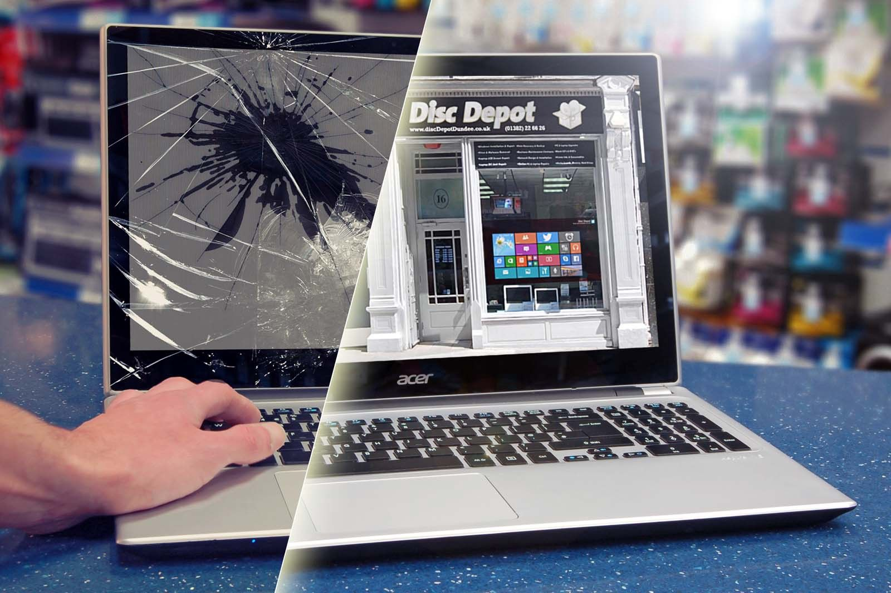
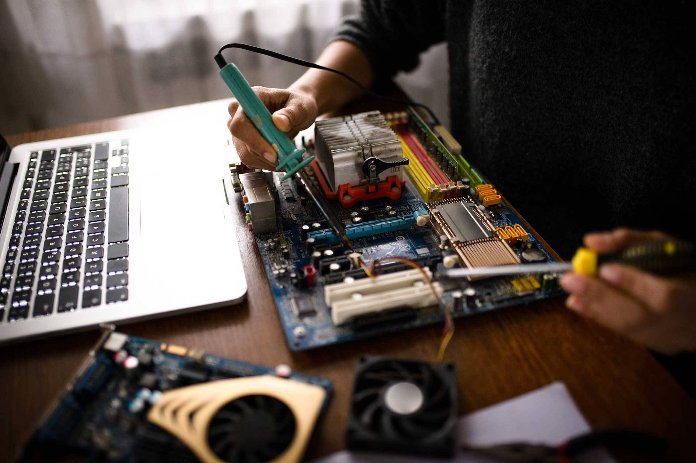

Más de 300 equipos reparados • Diagnóstico sin costo • Garantía de 3 meses
El costo depende del tipo de daño. Ofrecemos diagnóstico sin costo y te damos un presupuesto claro antes de comenzar cualquier reparación.
Sí, reparamos HP, Dell, Lenovo, Acer, Asus, Mac, Samsung, y prácticamente cualquier marca de computadora o laptop.
La mayoría de las reparaciones se completan en 24 a 48 horas. Reparaciones simples como cambio de batería o limpieza pueden estar listas el mismo día.
Sí, todos nuestros trabajos tienen garantía de 3 meses en mano de obra y componentes instalados.
No, trabajamos exclusivamente en nuestro taller. Trae tu equipo a 2920 Sauces, Colonia Benito Juarez, Las Animas, Puebla.